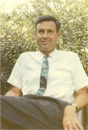

Please note: the AAS Obituaries are temporarily being hosted on this website while their full content is being ingested into the PubPub publishing platform newly adopted by the Bulletin of the American Astronomical Society. When the migration is complete, your existing links will take you to the final, migrated content. Contact peter.williams@aas.org with any questions.
Robert F. Christy (1916-2012)
Robert F. Christy was unique and remarkable in many ways.
He was born May 14, 1916, and grew up as an orphan in Vancouver, Canada. He received the Governor General's Gold Medal as the top high school student in the province of British Columbia; this medal included a scholarship that enabled him to attend the University of British Columbia as an undergraduate. Thereafter, he stood out as a graduate student of Oppenheimer's in theoretical physics at Berkeley.
Robert Christy was one of the pioneers invited to join the Manhattan Project at the University of Chicago in early1942, working on the world's first nuclear reactor (Chicago Pile 1). He worked first on the theoretical design with Eugene Wigner, and then on the experimental design with Enrico Fermi. This culminated in the first successful nuclear reactor on December 2, 1942. After that, Oppenheimer invited him to be one of the first to go to the Los Alamos site of the Manhattan Project and work on designing the atomic bomb. (This was early in 1943, and no housing yet existed at Los Alamos; accommodation was in a nearby Indian village, with transport by bus each day to the laboratory, until eventually housing was constructed.) At Los Alamos, Robert Christy was assigned to work for Hans Bethe, who was in charge of the theoretical design, but he also crossed over to the experimental design team of Bob Bacher, where he later jokingly stated that his height (6' 5”) was useful when making adjustments on the bomb. The first atomic bomb was called the “Christy Gadget” because he had made a crucial contribution to its design, realizing that the plutonium implosion bomb did not need a hollow sphere that might crumple (and thus fizzle) when imploded, but could be designed using a solid sphere of plutonium. When the first atomic bomb was exploded on July 16, 1945, at Alamogordo, New Mexico, the immediate reaction was joy that their work had not been in vain. Brigadiergeneral Thomas Farrell turned to his immediate superior General Leslie Groves, the head of the Manhattan Project, and said, “The war is over.” Groves replied, “Yes, just as soon as we drop one or two of these things on Japan.” President Truman had little choice but to use the bomb on Japan: the war was so bitter that he might have been impeached if he had not done so. Soon, however, the scientists also began to fear for the consequences of this powerful new weapon.
In December of 1945, Robert Christy become one of the founding members of the Association of Los Alamos Scientists (ALAS), and helped draft a statement educating the public on the peaceful uses of atomic energy. He was also one of the ten Caltech scientists who had worked on the atomic bomb who signed and paid for a fullpage ad in the Los Angeles Times on Oct 14, 1956, calling for an end to nuclear weapons tests. In 1966, Prof. J. R. Zacharias of the Massachusetts Institute of Technology invited Robert Christy to join a panel discussing technological means to end the war in Vietnam. He replied on May 4, 1966, “I do not believe we can achieve useful ends in Vietnam by military means only – I am convinced the problem is much more in the political and diplomatic realm than the military one. ... I do not believe a solution can be found in technological innovations and military weapons and practices. All I can see in that direction is more effective killing of people with whom I believe we have no basic quarrel. I would almost certainly find that avenue one that I could not devote myself to.”
Robert Christy's favorite contribution was in astrophysics, explaining for the first time how the RR Lyrae and Cepheid variable stars pulsated and changed their light output. These stars are used as key distance indicators for other galaxies, a crucial measuring stick needed for determining distance scales in the universe. In 1965, he was nominated to the National Academy of Sciences. In 1967, he was awarded the Eddington Gold Medal from Royal Astronomical society of Great Britain for his work on variable stars.
One of Robert Christy's ambitions was to serve his favorite institution, the California Institute of Technology. He always selflessly promoted the good of the institution as a whole. For example, he took on a double graduate teaching load so that Feynman would agree to come as a professor to Caltech. In 1968, Robert Christy started a twoyear term as Caltech's Executive Officer in Physics. Shortly thereafter, he started a twoyear term as Executive Officer for Physics and Chairman of the Faculty. At this time, he was also made chairman of the search committee to locate a new President for Caltech, and (after the arrival of the new President Harold Brown) chairman of the committee to search for a new Provost for Caltech. When none of the candidates would agree to become Caltech's Provost, Harold Brown asked Robert Christy to become Provost himself. He decided to serve Caltech's administration, in order to fulfill his dreams for Caltech. These dreams, that he actually fulfilled, included creating a better retirement plan for the faculty; encouraging the hiring of women faculty at Caltech (partly by eliminating the nepotism rule); bringing Caltech out of the red financially; improving the physical campus structure of Caltech (by renovating the gracious old student houses, getting rid of a public road that cut through the campus, obtaining funding for several new buildings, including laboratories, a new administration building to replace the demolished Throop Hall, a second swimming pool, and a second athletic building); and several other improvements. Robert Christy served as Provost (Academic VicePresident) for ten years, from 1970 to 1980; he was frequently Acting President for weeks at a time when Caltech President Harold Brown was at Helsinki promoting the SALT talks with the Soviet Union. In addition to his role as Provost, Robert Christy took on the job of Interim President of Caltech for nearly two years, from late 1976 until mid 1978. He was unique in serving in this double role, taking on both of these heavy loads until a permanent President could be found for Caltech. He was offered the Presidency of Caltech himself, but turned it down because he wished to get back to his beloved research.
Robert returned to teaching in 1980 and tried to get into research on atmospheric physics and weather prediction using satellite data, but did not feel he was making sufficient progress in this. In 1982, he was asked to head the US team in a joint USJapan dosimetry study of lowlevel radiation exposure of 100,000 people who survived the nuclear explosions in Hiroshima and Nagasaki. This longterm study led to new, improved standards for radiation exposure safety in medicine.
His were rare accomplishments, not only in physics and astrophysics, but also as a human being. He had a rare generosity, always sharing with the others around him whatever financial means he had. He also stood out as an athlete: he swam with Fermi, rode horses with Oppenheimer, learned crosscountry skiing from Bethe (later also becoming an avid downhill skier, and once obtaining a bronze pin in a timed downhill speed trial against expert skiers), and enjoyed playing tennis with the best Caltech tennis players. At age 93, he still galloped on horseback in perfect rhythm holding hands with Juliana, his second wife; he jumped sixfoot creeks on that horse (which his wife did not!).
Robert Christy was married twice. His first marriage was to Dagmar von Lieven in May 1941, as soon as he had obtained his Ph.D. They had two sons, Ted and Peter. This marriage ended in an unusually friendly divorce: they separated in the late 1960's, and the divorce was finalized in January 1971. He married IngeJuliana Sackmann, in August 1973, a woman who was 26 younger than himself (she was an astrophysicist). They had two daughters, Ilia and Alexa, late in his life as he neared his 60's. These daughters have said that they treasured him as the best father they could have imagined, always having time for them.
Robert Christy was also remarkable in that he never actually retired. For two decades, from his mid60's to his mid80's, he worked intensely on the USJapan joint dosimetry study, traveling all over the US and Japan. For the next few years, he helped his wife Juliana fight invasive cancer, successfully. From 2005 to 2010, he also underwent four successful surgeries (removal of one kidney, intestinal surgery, eye surgery, and back surgery). In early 2011, when he was 94, he started a scientific collaboration with Juliana and with Arnold Boothroyd, to resolve some remaining problems with pulsating stars. He also wanted to work with Arnold Boothroyd to put the finishing touches on a paper on basic nuclear physics that he had worked on earlier. These projects were never completed.
Robert led a happy and fulfilling life until October 3, 2012. At the age of 96 he passed on painlessly in his master bedroom, smiling, while being kissed on the cheeks by his wife Juliana and daughter Ilia. The cause of death was aspiration of the lungs (brought on by atrophy of his muscles).
He was unique in everything that he touched while on earth. As a physicist and astrophysicist he was brilliant, though he was remarkable in his modesty, taking his innovations and discoveries for granted. As an administrator, he took on challenging tasks, and generated longlasting improvements. As a person, he stood out for his integrity, selflessness, and generosity. He was tall and handsome, full of youthful energy and joiedevivre, be it in singing, in ballroom dancing, in athletic pursuits (such as hiking, swimming, tennis, skiing, and horseback riding), or in his love of travel to distant places far off the beaten track. He was always totally involved and devoted as a husband, as a father, or as a friend.
Photo courtesy of I.-Juliana Christy
Obituary written by: I.-Juliana Christy
Additional links:
- http://www.nytimes.com/2012/10/05/science/robert-f-christy-atom-bomb-physicist-dies-at-96.html?ref=obituaries
- http://www.latimes.com/news/obituaries/la-me-robert-christy-20121006,0,5455670.story
- http://www.bostonglobe.com/metro/obituaries/2012/10/05/robert-christy-physicist-and-early-recruit-manhattan-project/QSpjpMbdctbEkWtmzXIykN/story.html
- http://www.washingtonpost.com/local/obituaries/former-caltech-provost-robert-christy-physicist-who-worked-on-manhattan-project-dies-at-96/2012/10/04/f707552e-0e90-11e2-ba6c-07bd866eb71a_story.html
- http://oralhistories.library.caltech.edu/129/
- http://www.latimes.com/news/obituaries/la-me-robert-christy-20121006,0,5455670.story
- http://www.telegraph.co.uk/news/obituaries/9594189/Robert-Christy.html
- http://www.physicstoday.org/1.2861271
- http://www.caltech.edu/content/noted-physicist-robert-f-christy-dies
- http://www.newsday.com/long-island/obituaries/manhattan-project-scientist-robert-christy-dies-1.4080642
- http://www.aip.org/history/acap/biographies/bio.jsp?christyr
BAAS Citation: BAAS, 2012, 44, 023